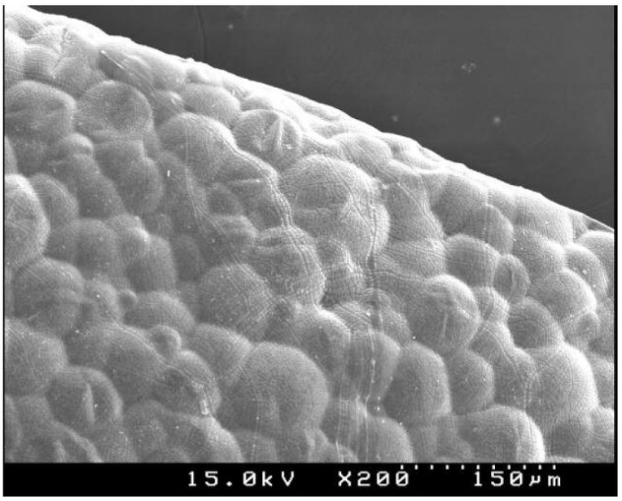

국내에 1974년 스티로폴(Styropor)이라는 이름으로 처음 소개된 발포폴리스티렌(EPS : Expandable Polystyrene)은 탄력성이 우수하며, 파손의 우려가 적어 취급이 용이하고 가격이 저렴한 등 여러 장점으로 현재 일반 건축용 단열재, 외단열, 샌드위치판넬 제조용 심재 등의 용도로 광범위하게 사용되는 대표적인 단열재 입니다.

50배로 발포된 발포폴리스티렌입자의 표면
발포폴리스티렌은 석유화학회사에서 제조되는 폴리스티렌수지에 펜탄이나 부탄과 같은 발포제를 첨가시켜 제조되는 0.2mm~3.0mm의 조그마한 비드(bead)상태로 가공공장에 공급되어 스팀을 열원으로 이용한 가열(1차발포)이후 성형틀에 삽입되어 2차발포(성형공정)을 통하여 얻어진 성형물을 그대로 이용하거나 적절한 크기로 열선(Hot Wire)을 이용하여 필요한 크기로 재단되어 제조되고 있습니다.
출처 - 박영휘 : "무기코팅층이 형성된 고난연성 발포폴리스티렌 성형물의 제조기술개발",한국건자재시험연구원 (2010)
준불연 가등급 EPS 단열재 DK보드
건축용 / 드라이비트용 / 판넬용
문의 1855-2240